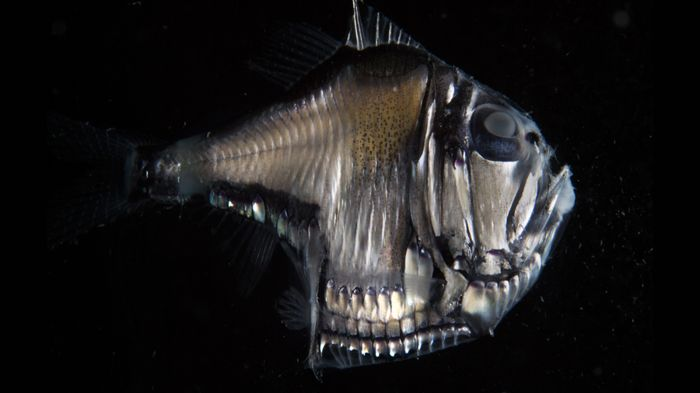

Hatchet Fish
Blue-Ringed Octopus

- These fish have bioluminescent
lights on their underside - They can live at a depth
of 4,500 feet
lights on their underside
of 4,500 feet
- These octopi are very
poisonous - They are 8" long
poisonous
Hatchet Fish |
Blue-Ringed Octopus |
|---|---|
|  | |
lights on their underside of 4,500 feet |
poisonous |
for more info on poisonous fish, click
for more info on carnivorous fish, click
to get back to the Task Log page, click